[취미]
자전거 생활
전기자전거 타고 편하고! 알차게! 돌아보는 제주도 일주
제주환상자전거길 개통 1주년 기념 '벨로스타 투르 드 제주'
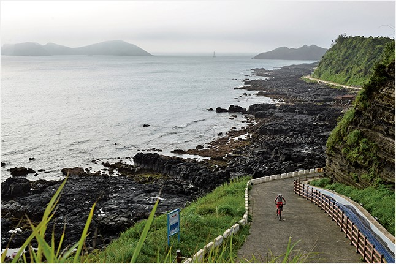최신형 센터 드라이브 방식의 전기자전거를 타고 제주도 환상자전거길을 일주하는 투어 행사가 열린다. 전기자전거 전문업체 벨로스타와 본지가 함께 기획한 이번 투어 행사는 제주도 환상자전거길 개통 1주년을 기념하고, 장거리에 적합한 전기자전거의 장점을 알리기 위해 마련되었다. 벨로스타 전기자전거는 한번 충전으로 90km를 달릴 수 있어 2박3일 간 여유롭게 제주도 해안길의 진면목을 만날 수 있다.
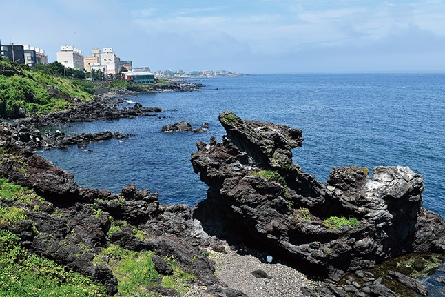
용두암
“이 길을 여러 번 돌았는데 새로운 풍경이 속속들이 보이더군요. 역시 전기자전거는 여행용 이라는 말을 실감했습니다.”
“파워 어시스트 2단만으로도 힘이 충분했어요. 이렇게 달리니 한번 충전으로 100km까지 문제 없네요. 놀라운 주행거리입니다.”
“BB 옆에 달린 모터가 크랭크를 직접 돌려주기 때문에 전기자전거라는 이질감을 거의 못 느낄 정도로 균형감과 페달링이 편했어요.”
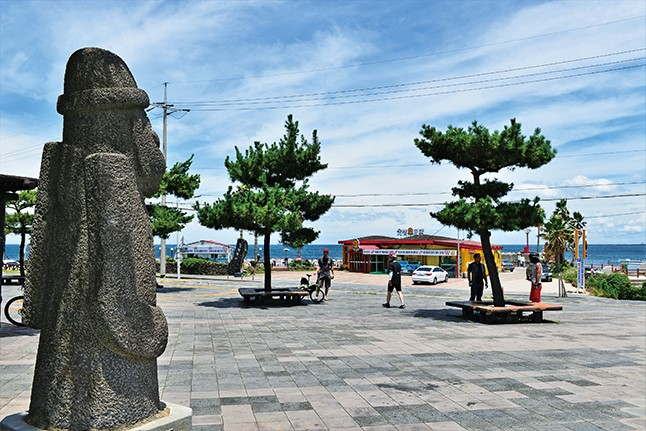출발 직전 공식행사가 열릴 용담레포츠공원. 용두암 근처 환상자전거길 옆에 있다.
10월 7~9일 올해 처음으로 마련되는 제주 환상자전거길 개통 1주년 기념 ‘벨로스타 투르 드 제주’를 앞두고 사전 답사를 간 취재팀은 벨로스타 전기자전거로 제주도를 일주한 다음, 감탄의 한 목소리를 냈다. 제원상 1회 충전 주행거리는 90km라고 했지만 실제 그 정도 달릴 수 있는지가 가장 큰 관심사이자 걱정거리였는데, 100km를 달리고도 배터리가 남았으니 독자들과 함께해야할 입장에서 마음이 든든했다.
사실 첫날은 파워 어시스트 단계를 높인 상태에서 고속으로 달리는 바람에 60km 정도 달린 후 배터리가 거의 바닥나버렸다. 취재팀은 ‘이렇다면 밤에 충전해서 다음날 배터리 하나로 종일 달려야 하는데, 2박3일 제주 일주는 무리 아닌가’ 싶어 대단히 걱정하던 차였다. 둘째날부터 파워 어시스트 단계를 2단으로 고정하고(최고 5단까지 있음) 속도를 20km 정도로 낮추자 100km를 거뜬히 돌파한 것이다.
벨로스타 전기기자전거와 제주 환상자전거길의 만남
자, 그렇다면 전기자전거로 제주도를 일주하면 무엇이 다르고, 어떤 점이 좋을까. 혹시 전기자전거는 너무 편하기만 한 것은 아닐까. 운동도 안 되고 편하기만 하면 자전거라고 할 수 있을까. 전기자전거, 특히 벨로스타 전기자전거를 이용한 장거리 여행에 대한 궁금증을 하나하나씩 살펴보자.
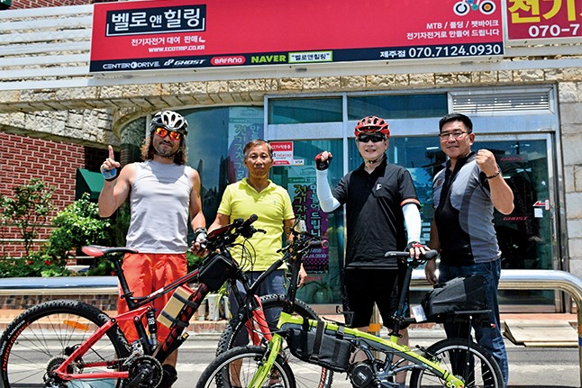집결지는 벨로스타 제주점이다. 행사를 앞두고 답사 투어 직전 제주점 앞에 모인 벨로스타 관계자와 취재팀. 왼쪽부터 본지 이윤기 이사, 벨로스타 최기호 전무, 본지 박봉일 부사장, 벨로스타 양영모 부사장
전기자전거는 운동이 되지 않는다?
그렇지 않다. 오토바이 같은 스로틀 방식은 페달링이 필요 없어 운동이 거의 되지 않는 것이 사실이다. 하지만 페달링을 돕는 PAS(Pedal Assist System) 방식은 일반 자전거보다 힘은 훨씬 덜 들지만 페달링을 해야 하기 때문에 상당한 운동이 된다.조금 더 편하게 더 멀리, 장시간 동안 라이딩을 즐길 수 있다고 생각하면 된다. 제주도에 비치된 벨로스타 전기자전거는 모두 PAS 방식이다.
주행거리가 짧아 장거리는 불안하다?
배터리 성능이 발전하면서 이 문제는 많이 해결되었다. 전기자동차가 떠오르는 것도 배터리 기술의 발전 덕분이다. 또 하나 전기자전거의 주행거리에서 유의할 점은 자동차의 연비와 마찬가지로 타는 사람에 따라 크게 달라질 수 있다는 것이다. 자동차 운전도 경제속도로 정속주행을 하면 제원보다 더 좋은 연비를 얻을 수 있는 것처럼, 전기자전거도 어시스트 강도를 낮추고 가능하면 페달링을 많이 하면서 적정 속도로 달리면 제원상의 주행거리 이상을 달릴 수 있다. 벨로스타 전기자전거는 250W 모터의 경우 주행거리가 90km 정도지만 경제주행을 하면 100km 이상 달릴 수 있음을 취재팀이 확인했다.
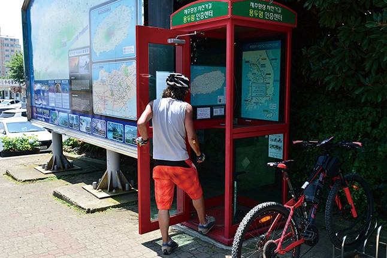환상자전거길의 기점이 되는 용두암 인증센터
배터리가 떨어지면 무용지물이다?
이것이 바로 전기자전거가 오토바이나 스쿠터와 극명하게 다른 점이다. 전기자전거에는 페달이 달려 있고 모터와 배터리가 최소화·경량화되어 있어서 배터리가 방전되어도 페달링으로 움직일 수 있다. 장거리는 무리지만 단거리는 라이딩이 어렵지 않다.
너무 무겁고 디자인이 떨어진다?
그동안 전기자전거의 단점으로 지적된 대표적인 것이 무게와 투박한 디자인이었다. 하지만 전기자전거에서 무게 비중이 높은 배터리 기술이 발달하면서 많이 경량화되었다. 지금은 보급형 생활자전거 무게와 큰 차이가 없는 15~18kg 제품이 많이 나와 있다. 벨로스타 전기자전거의 경우 키트 무게가 6.9kg이어서 12kg 정도의 완성차를 전기자전거로 개조하면 18kg 정도가 되어 크게 부담스럽지 않다. 디자인도 배터리와 모터가 작아지면서 얼핏 보아서는 일반자전거와 구분이 어려울 정도가 되었다.
특유의 모터 소음이 난다?
전기 모터의 가장 큰 장점은 소음이 적다는 것이다. 전기자전거 역시 마찬가지다. 기어가 맞물려 돌아가는 소음이 약하게 들리는 것은 사실이지만 거의 느끼기 어려울 정도다. 옆에서 지나가도 전기자전거를 알아채기 어렵다. 이제 전기자전거에서 소음은 걱정거리가 아니라 오히려 자랑거리다.
결론!
여행에는, 특히 볼거리 많은 제주도에서는 전기자전거가 정답! 그 이유 5가지
- 몸이 편해지면 더 많은 것을 보다 깊게 볼 수 있다.
- 체력을 아낄 수 있어 라이딩 후에도 다른 여가를 즐길 수 있다(일반 자전거로 동네 한 바퀴 돌 힘이면 50km 이상 장거리를 갈 수 있다).
- 계획된 시간에 일정을 마칠 수 있다.
- 자동차나 일반 자전거 여행보다 비용을 절약할 수 있다(기름은 안 들고 음식은 덜 먹으니!).
- 자전거 없이 가뿐하게 몸만 가면 된다.
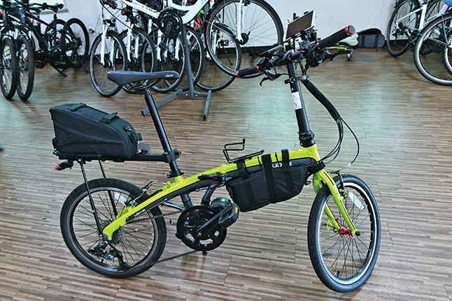
미니벨로 타입의 벨로스타. MTB, 하이브리드, 여성용도 있다.
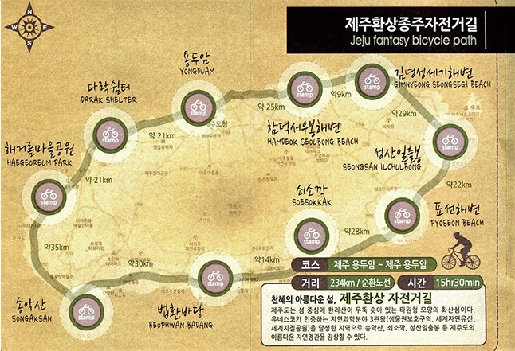
제주 환상자전거길 234㎞ 코스 개요
제주 환상자전거길 234km는 10곳의 인증센터를 기준으로 10개의 구간으로 구분할 수 있다. 각 인증센터는 행사 당일에는 쉼터와 집결지 겸 보급장소가 된다. 용두암 인증센터를 기점으로 해안을 따라 반시계 방향으로 돌게 된다. 각 구간별 특징을 소개한다.
| 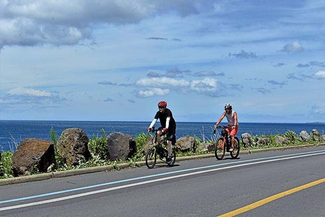 | |
| 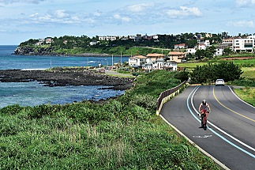 | 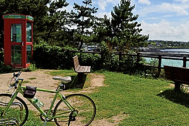 |
[1구간] 용두암~다락쉼터 21㎞
제주시 북쪽 해변에 자리한 용두암은 제주도의 상징 중 하나다. 이호테우해변까지는 카페와 식당, 펜션이 즐비한 해안길이다. 하귀리부터 시작되는 애월 해안길은 가장 아름다운 구간 중 하나다. 제주시내를 완연하게 벗어나지만 동화 같은 펜션과 상하로 울렁이고 좌우로 흔들리는 길은 이름 그대로 환상(幻像)적이다.
| 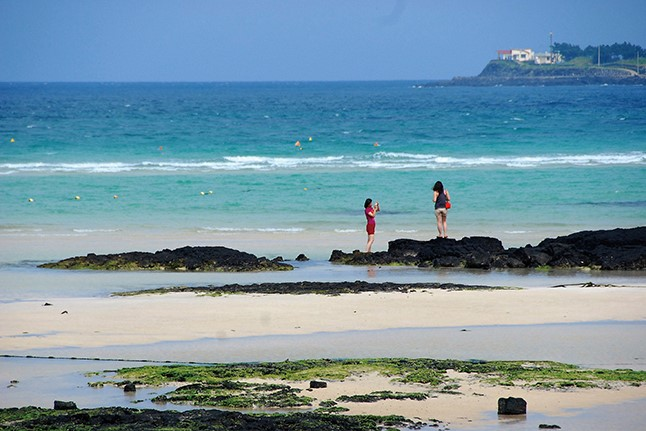 | |
| 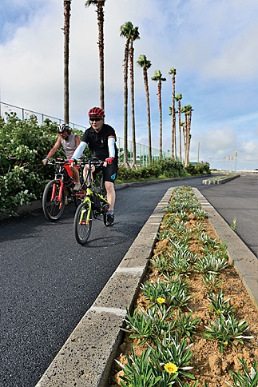 | 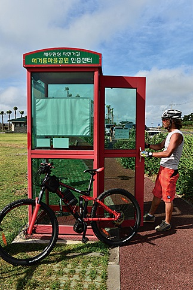 |
[2구간] 다락쉼터~해거름마을공원 21㎞
제주도에서도 물빛이 가장 아름답다는 협재와 금릉 해변을 지나간다. 그에 앞서 거쳐 가는 곽지과물해변의 새하얀 백사장도 강렬한 인상을 남긴다. 협재해변은 언제나 관광객으로 붐비지만 바로 이웃한 금릉해변은 비교적 한산한 편이다. 협재와 금릉 해변 맞은편에 떠 있는 비양도는 [어린 왕자]의 모자와 꼭 닮아서 동화적인 감성을 자극한다. 태양이 눈부시고 백사장과 바다가 빛날 때, 야자수 흩날리는 이 구간은 흡사 남국의 이국풍으로 돌변한다.
| 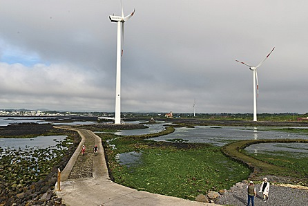 | 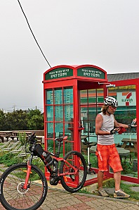 |
[3구간] 해거름마을공원~송악산 35㎞
이제 해안길은 천천히 방향을 틀어 남향하기 시작한다. 거인처럼 도열한 풍력발전기를 지나면 공룡시대의 무대 같은 차귀도의 괴상한 모습이 점점 가까워진다. 탁 트인 조망을 자랑하는 수월봉과 화산재 절벽을 따라가는 엉알해변도 지난다. 모슬포까지 조금 단조롭지만 호젓한 풍경이 계속되다가 송악산 직전 알뜨르비행장 일대에는 광활한 초원이 펼쳐진다. ‘벨로스타 투르 드 제주’ 때는 송악산 아래에서 1박 하게 된다.
| 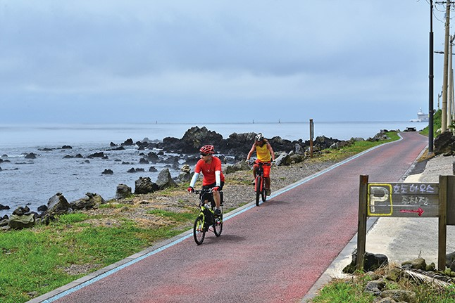 | |
| 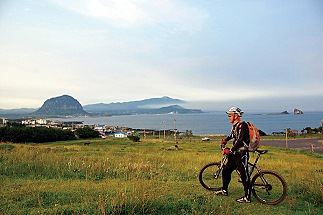 | 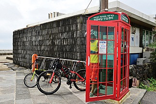 |
[4구간] 송악산~법환바당 30㎞
송악산~산방산 사이의 사계리 해변길도 가장 아름다운 길 중 하나다. 육중한 산방산과 깎아지른 절벽을 드리운 월라봉 뒤편으로 한라산이 장중한 자태를 드러내는 진풍경 안으로 길은 빨려드는 것만 같다. 화순에서 환상자전거길은 1132번 일주도로로 잠시 우회하지만 안덕계곡에서 남쪽 대평리로 빠지면 비경의 해변길이 숨어 있다.